THE BOARD · ONE WIDE GEIGER · 1 OCT
Your 10:00 call on the cohort board, and what changed. Everything was checked in a hidden test browser on this Mac (never on your screen). It opened the real scintillahub.ai address, answered with this branch's page, and read live prices and Geigers. It wasn't allowed to save anything: every write it tried would have been blocked, and it tried none. Widths checked: 1680 (your desk), 1280, 900 and 390 (phone).
1 · BESIDE THE LEFT PANEL: ONE WIDE GEIGER
- TREND, MOM and READ no longer show beside the left panel. The GEIGER bar takes all of their width. At 1680 the Geiger cell went from 76 px to 276 px, measured on screen.
- The row stays 33 px at 1680 (measured on six rows, before and after). The phone row stays 41 px, which is its tap-target height, also unchanged.
- Everything else on the row is where it was: ticker, last, change, F P/E, market cap, revenue, RSI, RVOL and the market dot.
- The phone already left TREND, MOM and READ out, so it doesn't change.
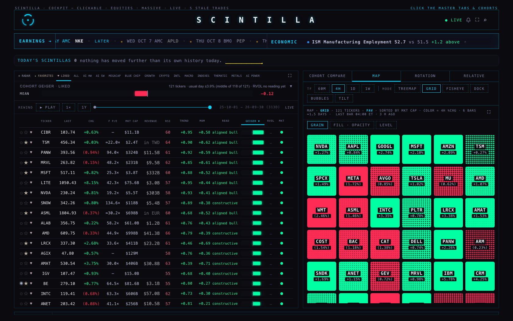
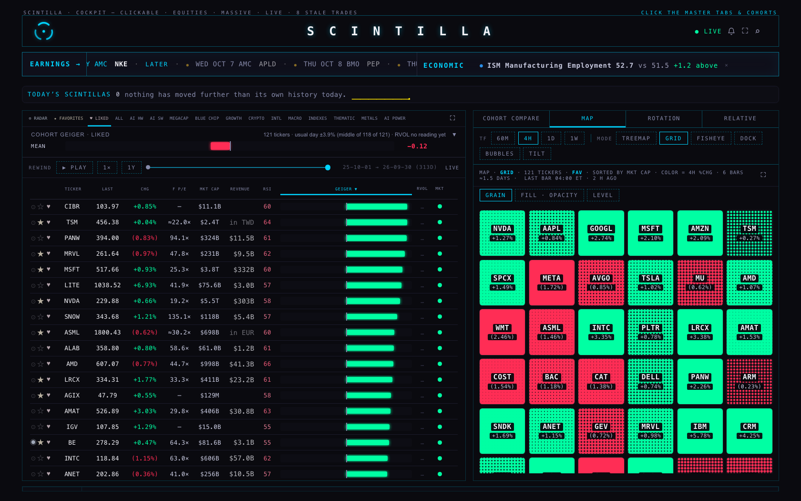
2 · CLICK THE GEIGER BAR: THE BREAKDOWN
- Clicking a row's Geiger bar opens a small panel right under the bar, or above it near the bottom of the screen. It shows:
- the Geiger number and its bar, which keeps its glow (the special one);
- TREND and MOMENTUM, each a plain bar (no glow) with its number;
- the read in words with a one-line meaning, for example "pullback — the uptrend holds; the fast frames have rolled over". A ◆ appears when trend and momentum disagree.
- All three bars in the panel run on the same fixed scale, −1 to +1, with 0 in the middle.
- It never moves the row. The panel floats above the page, so the row's position was measured before and after the click: it moved 0 px, at every width.
- One panel at a time. Clicking another bar moves the panel there, and clicking the same bar again closes it.
- Ways to close it: Esc, the ✕, a click anywhere else, or scrolling. Esc closes only the panel. A full-screen board or an open company stays as it was (checked).
- From the keyboard: Tab reaches the Geiger bar, and Enter opens it.
- The company page still opens by clicking anywhere else on the row.
- Until today, clicking the Geiger bar opened the 23 Sep "how unusual is this reading?" history panel. That panel is now a link at the foot of the breakdown. It still opens from its own button above the board and from any RSI number, so nothing was lost.
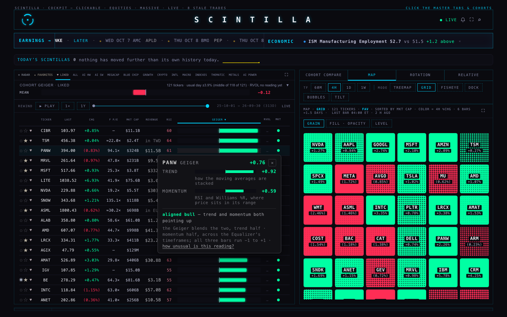
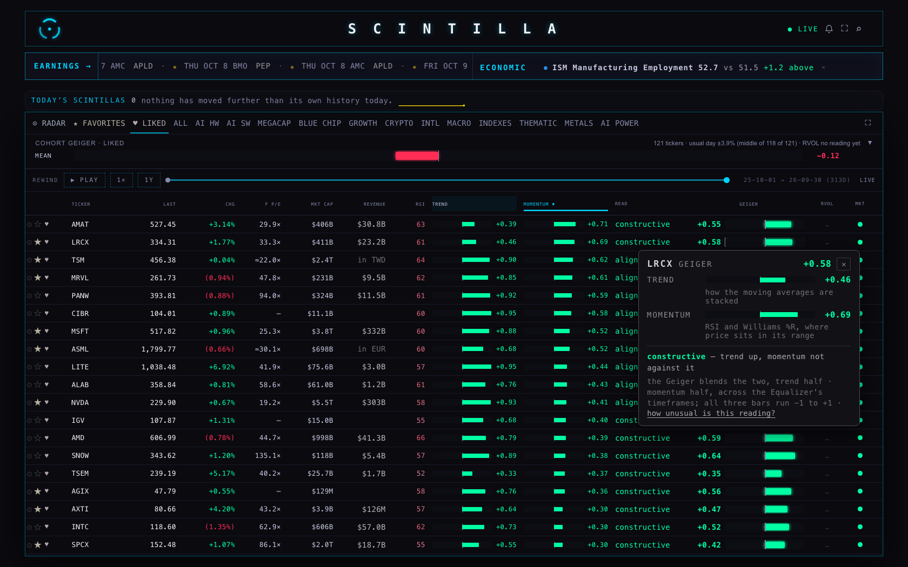
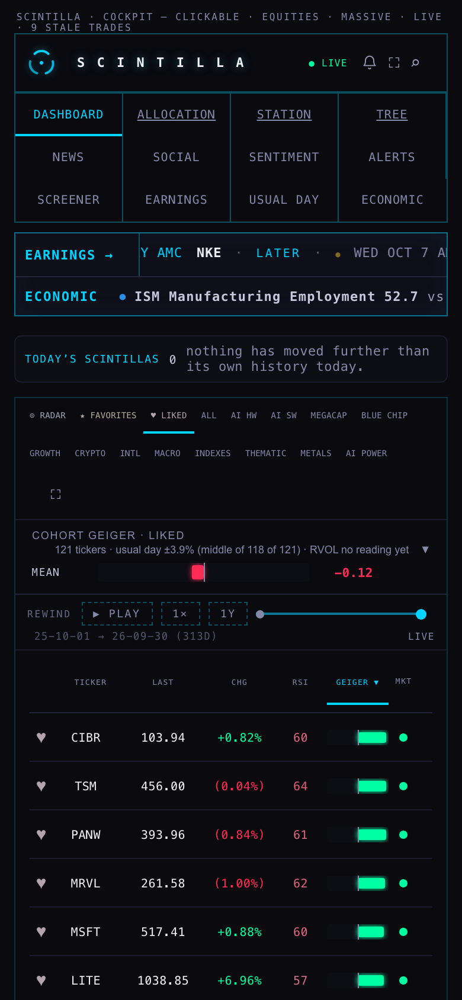
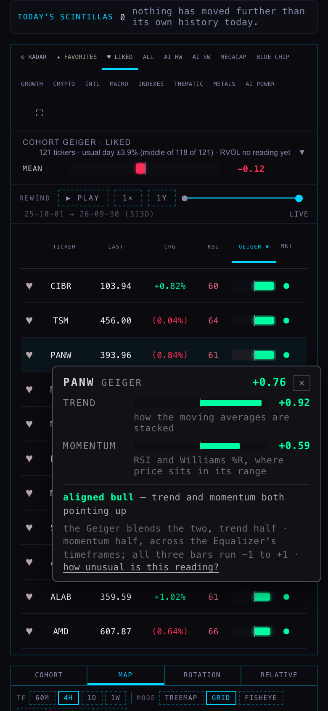
3 · FULL SCREEN: TREND AND MOMENTUM AS COLUMNS, RE-RANK BY EITHER
- In full screen (⛶ on the board), TREND and MOMENTUM are their own columns. Each is a plain bar with its number. READ shows in words with its ◆, and the Geiger carries its number beside its bar.
- TREND and MOMENTUM sort like every other column. Click the header for highest first, and click again for lowest first. A name with no reading goes last.
- Keyboard and pointer both work. Tested by clicking TREND, then tabbing to MOMENTUM and pressing Enter. Both orders came out correctly ranked, highest first, at 1680, 1280, 900 and 390.
- The sort uses the numbers on screen. If you rewind the board to an earlier day, it ranks by that day's trend.
- On a phone, full screen keeps the six columns a re-rank is read by: ♥ · ticker · change · TREND · MOMENTUM · Geiger.
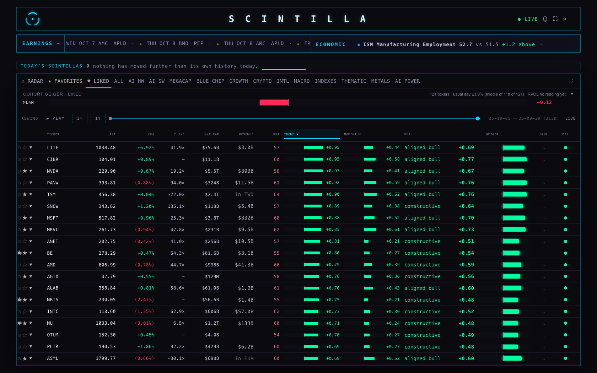
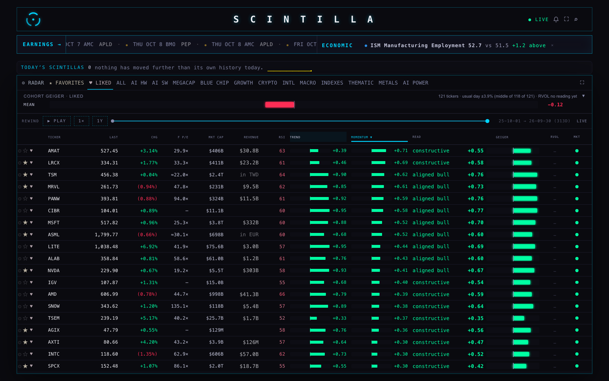
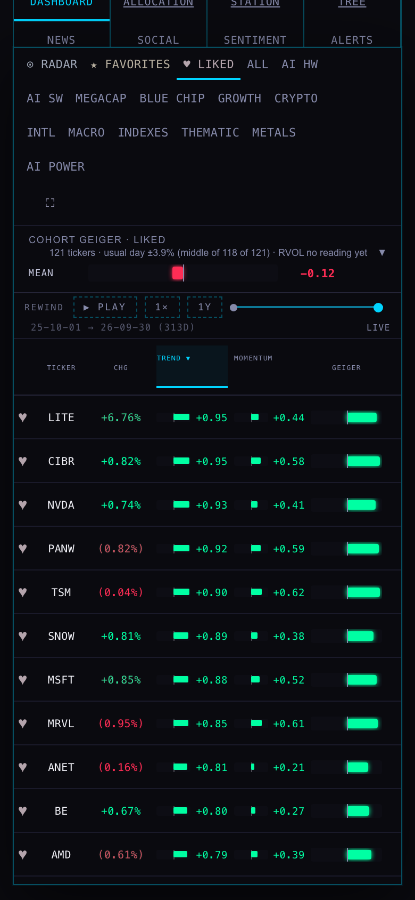
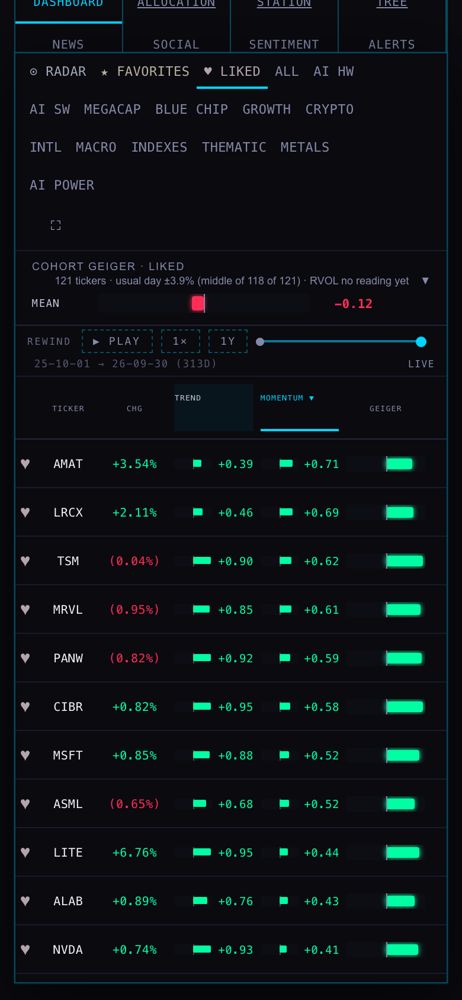
4 · THE HEADER TICKER: THE DAY'S CHANGE IN COLOUR
- In the header, the day's change now reads +4.41% on an up day and −3.01% on a down day: a minus sign, not brackets. The price beside it takes the same colour.
- What I fixed. The header's change is written by three different pieces of code. The one that runs when the price is unchanged but the previous close arrives or changes rewrote the number without touching its colour. That could leave a down day painted in an earlier green. All three now go through one function that sets the number, the sign and the colour together. A colour class means no later write can leave the wrong colour behind. A test pins this.
- Honestly: on today's live page I could not reproduce "(0.55%) in green". Opening a down name by clicking its row showed it red both times (BTDR "(2.81%)" at 1680, HIVE "(2.37%)" at 390), and the colour stayed right across 12 samples over 3 seconds. The likely causes are the code path above, or the half-second tick flash.
- The tick flash still happens, on purpose. When a price ticks, its number glows for about half a second in the tick's direction. It's the "scintillate" from 23 Sep. On a down day, an up tick briefly flashes green. My first header shot caught exactly that on IBM, so the shots below were taken between flashes. The resting colour was right in every sample.
- Checked at 1680, 1280, 900 and 390. The change is fully visible at each width, not cut.
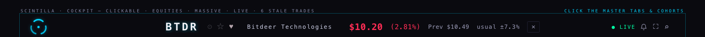
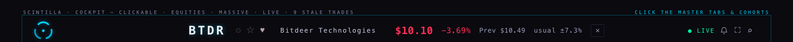
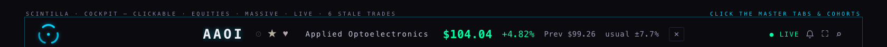
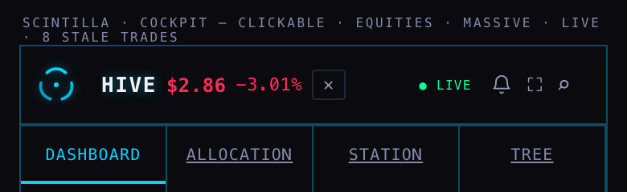
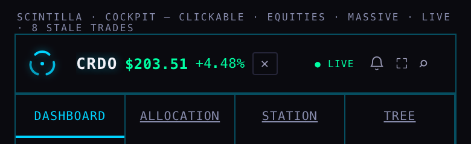
5 · ONE BOARD
The hidden ?board=v2 set from 29 Sep (READ drawn as an icon) has gone: the switch, the icon map and its styles. Your choice replaced the icon idea. A device that had tried v2 forgets it the first time it loads this page. v2's one other idea, the Geiger's number beside its bar, is kept in full screen and in the breakdown.
6 · RVOL
Left exactly as H3 built it. The column reads rvol_at_time the moment a row is current. Until then each cell shows a quiet "…", and the board's summary line says "RVOL no reading yet" once. You can see both in the shots above. The writer isn't running yet: it's waiting on your yes for the small Fly machine.
7 · HOW TREND AND MOMENTUM ARE MADE (FROM THE PUBLISHER'S CODE)
Read from services/hot-query/geiger-publish-artifact.mjs in the provider repo, read only. The version read is 2cce315, the newest, on the live chart-API line. I checked my reading against the live numbers. I took the RSI and Williams values the publisher stored for every name and timeframe at 10:18 ET, redid the momentum sum by hand, and matched the published momentum for all 590 names, to within 0.001. So what follows is the math actually running, not a description of it.
Trend, for one timeframe
- Take that timeframe's last 230 bars. It draws nine moving averages of the close: 5, 8, 13, 21, 34 (exponential) and 50, 100, 150, 200 (simple).
- Ask eight questions, each neighbour against the next: is the 5 above the 8? the 8 above the 13? … the 150 above the 200?
- Trend = (yes answers − no answers) ÷ 8. All eight yes (perfectly stacked up) = +1. All eight no = −1. Half and half = 0.
- A young stock without 200 bars just has fewer lines and fewer questions.
Trend doesn't care how far price is from the lines, only the order they're stacked in.
Momentum, for one timeframe
- RSI(14), standard Wilder: RSI 23 counts as −1, RSI 77 as +1, and RSI 50 as 0, in a straight line between. Anything beyond 23 or 77 stays at ±1.
- Williams %R(14): where the close sits between the highest high and lowest low of the last 14 bars. Near the bottom (−90) counts as −1, near the top (−10) as +1, in a straight line between, capped at ±1.
- Momentum = 60% RSI part + 40% Williams part (the Equalizer's "momentum mix").
Into the Geiger
- For each timeframe: Geiger = ½ trend + ½ momentum (the Equalizer's family weights). If a timeframe has no momentum, it uses trend alone.
- Across timeframes it's a weighted average with your Equalizer's timeframe weights. In the live run at 10:18 ET, seven took part:
| timeframe | 3h | 4h | 6h | 12h | 1d | 3d | 1w |
|---|---|---|---|---|---|---|---|
| weight | 1.24 | 2.28 | 3.18 | 3.17 | 3.18 | 2.58 | 0.99 |
| share | 7% | 14% | 19% | 19% | 19% | 16% | 6% |
The board's TREND number is the same weighted average of the seven trends. Its MOMENTUM is the weighted average of the seven momentums. When every timeframe has momentum, Geiger = ½ TREND + ½ MOMENTUM exactly.
Example, NVDA at 10:18 ET: trend +0.93 · momentum +0.41 · Geiger +0.67. On its daily timeframe all eight stack questions were yes (+1), RSI 57.7 gave +0.29, Williams −19.9 gave +0.75, so momentum = 0.6×0.29 + 0.4×0.75 = +0.47.
That's the stocks. The few non-stock names on a board (funds, crypto) get their trend and momentum from an older daily-only table (composite_staged), not from this publisher.
The read words
The words come from the Hub's own code (scinRead, one definition shared by the board and the compare strip), not from the publisher. They're checked top to bottom, and the first that fits wins (T = trend, M = momentum):
| word | when | today (590 names) |
|---|---|---|
| aligned bull | T ≥ 0.5 and M ≥ 0.4 | 43 |
| aligned bear | T ≤ −0.5 and M ≤ −0.4 | 175 |
| pullback | T ≥ 0.4 and M ≤ −0.15 | 5 |
| turning up | T ≤ −0.2 and M ≥ 0.35 | 0 |
| mom leads | T between −0.25 and +0.25, and M ≥ 0.5 | 2 |
| stalling | T ≥ 0.5 and M between −0.2 and +0.2 | 20 |
| constructive | T ≥ 0.3 and M ≥ 0 | 50 |
| broken | T ≤ −0.3 and M ≤ 0 | 135 |
| mixed | anything else | 160 |
◆ appears when T and M point opposite ways, or are more than 0.60 apart.
One thing that could bite: the words are lopsided. An uptrend has "pullback" and "stalling", but a downtrend with a bounce has no word of its own. Trend −0.6 with momentum +0.2 reads "mixed", the same word as a name with no direction at all.
Did anything drift after the Indicator Lab's revisions? Yes, four things.
- Momentum still mixes RSI and Williams %R (60/40). The Station's pane is RSI-only (approved 29 Sep, "SCINTILLA RSI MTF Visual REVIEW V5"). What you see on the Station isn't what the score is made of.
- Different ends. The score counts RSI 23 as −1 and 77 as +1. The pane draws its lines at 30 and 70. An RSI of 70 on the pane is +0.74 in the score's RSI part, not +1.
- Different timeframes. The pane draws 3H · 4H · 6H · 8H · 12H · 1D lines and a 2D/3D/1W/2W cloud. The score uses 3h · 4h · 6h · 12h · 1d · 3d · 1w. It has no 8H, no 2D, and no 2W (weight 0).
- Finished vs. forming bars. At 10:18 ET the score's daily part used Wednesday's finished bar, so today's unfinished day wasn't in it. The pane shows the forming value by default.
Also corrected: the board's old hover text called trend "slow, daily-locked" and momentum "fast, 6h/12h/1D". Neither is true of the live math. Trend is the stack across all seven timeframes, and momentum's weight is spread across all seven too. The breakdown and the READ hover now describe what's actually computed.
Not drifted: the live run uses a newer Equalizer than the one written into the publisher's code. Receipt d0da9a… replaced the 18 Aug f6cf97…, and 2h dropped to zero weight. The Hub checks that receipt against your current Equalizer before it shows a single number.
What would change if the score followed the pane (RSI only)
Measured on today's live numbers (one moment, 10:18 ET, 590 names). This is not a back-test. I swapped momentum to RSI only, kept everything else, and re-ran the read:
| change | momentum moves, typical | names moving > 0.10 | > 0.20 | Geiger moves | read word changes |
|---|---|---|---|---|---|
| RSI only, ends kept at 23 / 77 | +0.09 | 319 | 23 | under 0.20 for every name | 65 of 590 (11%) |
| RSI only, ends at the pane's 30 / 70 | −0.01 | 156 | 23 | — | 35 of 590 (6%) |
The biggest moves in the words (23/77 case): aligned bear → broken (23 names), aligned bull → constructive (12), mixed → constructive (8), constructive → stalling (6).
Why it happens: Williams %R hits its ends easily (any close near the top of its 14-bar range is +1). RSI rarely does. Without it, momentum is calmer and fewer names reach the "aligned" words.
If the timeframes were matched to the pane as well (8H, 2D, 2W), the numbers would move again. I couldn't measure that, because the publisher doesn't compute those timeframes.
Script: harness/mom-compare.js · output: data/momentum-rsi-only-compare.json · the live run's metadata and NVDA's seven timeframes: data/geiger-live-meta.json
WHERE EACH NUMBER COMES FROM
- Geiger, trend and momentum (stocks): the chart API's
/geiger, written by the publisher above. The Hub shows them only if the run's Equalizer receipt matches yours. - Trend and momentum (non-stock names):
composite_staged, daily. - The read and ◆: worked out in the page from those two numbers.
- The header price and change: the live quote against the provider's previous close. Same source as before; only the sign and colour handling changed.
WHAT COULD BE WRONG
- Two different bar scales. On the board, the Geiger bar is drawn against the strongest name on the board, so the leader always fills its half (unchanged). In the breakdown, all three bars use the fixed −1…+1. PANW at +0.76 nearly fills the board cell, but reaches about three-quarters of its half in the breakdown.
- The breakdown covers the rows under it while it's open. It doesn't move them.
- When you leave full screen sorted by TREND or MOMENTUM, the board keeps that order. Those columns aren't shown there, though, so no header carries the ▼. Click GEIGER to go back.
- The "(0.55%) in green" sighting wasn't reproduced (see 4). If it comes back, note the name and the time: the half-second flash is the first suspect.
- The momentum comparison is one moment on one day.
WHAT I DID NOT DO
- Not deployed and not pushed. Nothing was written to any table, setting or list.
- The publisher, the Equalizer and the read thresholds are untouched: section 7 is explanation only.
- RVOL untouched (see 6). The Indicator Lab folder is byte-identical.
- No Geiger number on the normal board beside the left panel. It's in full screen and in the breakdown.
- The trial copy at
/preview/company-view/was rebuilt from this page, as every lane does, so its test stays green.
TESTS
node --test tests/: 1,621 tests, 1,614 pass, 2 skipped (as before). The 5 that fail are the 5 known ones: the age-function check, xfeed-publish, and three outside the Hub (Indicator Lab checkpoint, readiness, saved review charts).
The unchanged live branch at c7b5024 gave the same 5, plus one visual-engine timing test that passes when run alone, so it fails only under load. New in tests/board-wide-geiger-h4.test.mjs: 7 tests covering the column set, the full-screen columns, the trend and momentum sort, the button, the breakdown's content, how it closes, and the header change. Three older tests were updated for the new column name, the new sort helper, and v2 being gone.